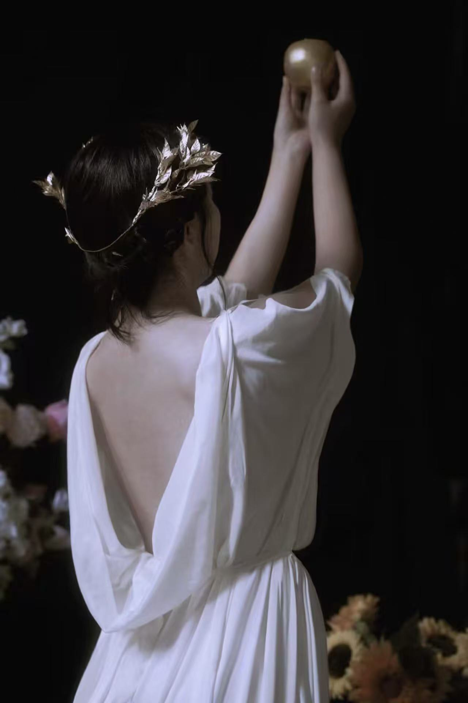
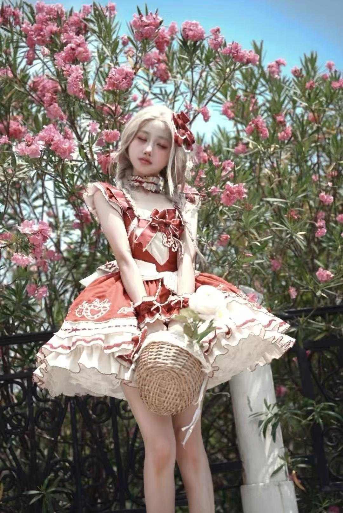
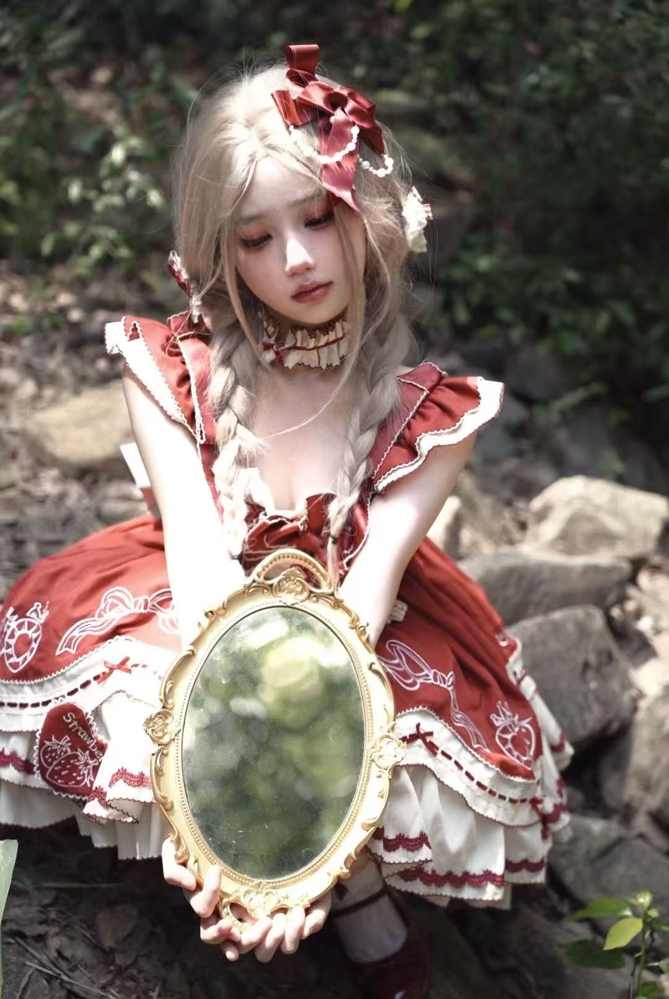

摄影手记
西幻油画风的核心，是让镜头成为画笔，把神话与幻想揉进现实画面。
我偏爱用暗调铺陈神域的神秘，用柔光晕染洛丽塔的甜，再以冷灰调刻哥特的冽。
从金苹果的金属光泽到十字的冷硬质感，都要让光影顺着西幻的叙事脉络，在画面里酿出油画般的厚重与诗意。
下面是我的一些摄影作品：
-
金苹神谕拍摄时间：2025年8月 拍摄地点：平湖

是神话里那个苹果吗..?
喜欢数：0 -
绯夏甜梦拍摄时间：2025年8月 拍摄地点：九龙山 
和我一起采花吧！
喜欢数：0 -
十字咏叹拍摄时间：2025年2月 拍摄地点：平湖

黑裙与珍珠缠绕的哥特式咏叹
喜欢数：0
本页作品统计：共 9 张作品，总喜欢数：0
常用设备
- 相机：sony a7c2 ; 富士xt20
- 其他：反光板、三脚架、打光灯